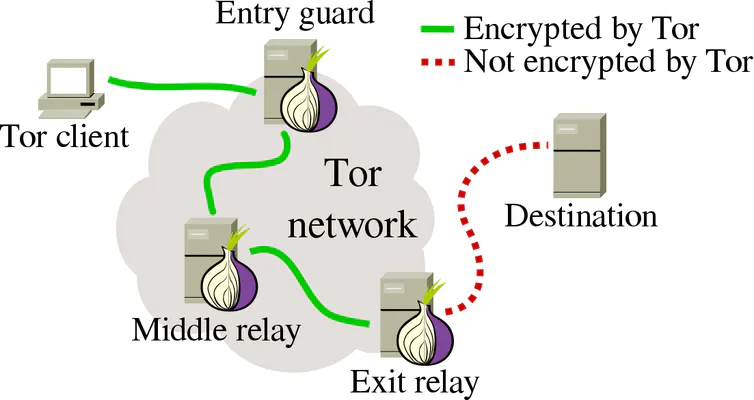

Tor full form is the onion routing it is and implemantation of
onion routing which was developed in the mid 90's by US Naval
Research the idea is that it bounces around connections between
different routers so that you are "hard to track" and it provides
anonymity.
Now take a look in a tor connection-
The person passing the connection encrypt it just know who send
it to him and what he will send to take a look at this image-

when tor network goes to many routers or computers at first they
encrypt the request to be send to server
layers of onion define the encryption, understand this encryption
like this now at the exit relay the request is given to the server
which thinks that we are the last computer and our idenity changed
remember we have every key to unlock that encryption layers
and the 3 computers which our message pass through have 1 key
to unlock the request then it passes to another one and it
also give it to another computer by unlocking it first by it's
own key and then the last computer which is the exit relay remove
the encryption using its final key and send it to the server
which assumes that we are that computer which send the request
after that to get the response from the server it do that process
again and every computer passing through it encrypt it but we have
all the key so we can unlock it and read the response this is how
onion routing(Tor) works and tor is not illegal feel free to use it
using
Tor website